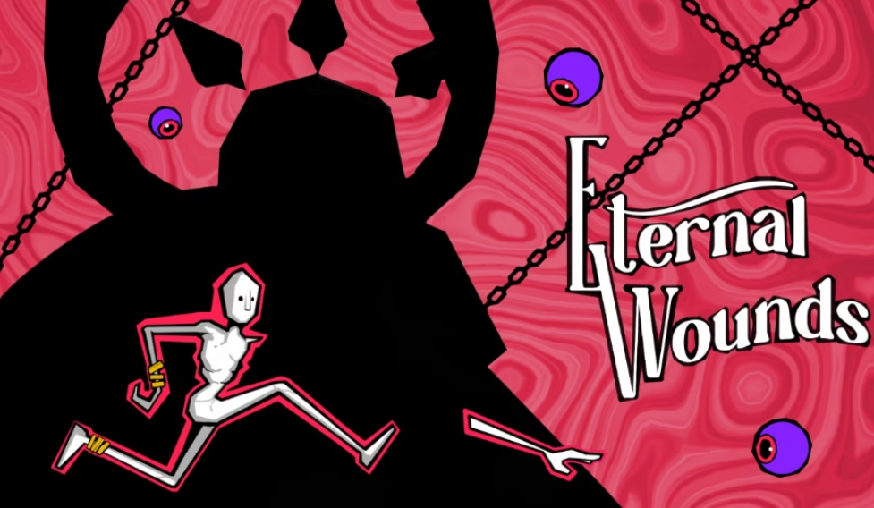
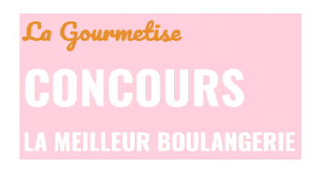

Stage Game Designer · Artefacts Studio
Stage de fin de Licence Level Design (Juin – Septembre 2025) au sein d'Artefacts Studio. J'ai travaillé en tant que Game Designer sur un jeu de course, en me concentrant principalement sur le Track Design : conception, mise en forme et itération des circuits sous Unreal Engine 5.


Eternal Wounds · Vertical Slice Gamagora
Projet collectif multi-filières (Janvier – Avril 2025) réalisé en étroite collaboration avec les autres parcours de la filière Gamagora (programmeurs, artistes, sound designers). Vertical slice d'un jeu de type Puzzle / Action.
Mes rôles : Conception Level (Puzzle) — design et construction des niveaux — et Feature Gameplay — spécification et test de mécaniques de jeu.

La Gourmetise · Site Web & Application Mobile
Développement complet d'un site web et d'une application mobile Android pour La Gourmetise, une entreprise de restauration fictive. Projet réalisé dans le cadre du BTS SIO.
Stack technique : PHP / Laravel (back-end), Android Studio (app), MySQL (base de données), GitHub (versioning).


Projet Discovery · Jeu Vidéo Personnel
Développement d'un jeu vidéo personnel réalisé en parallèle du BTS SIO. Projet alliant conception de jeu, modélisation 3D avec Blender, création sonore avec FL Studio et développement sous Unreal Engine.


Logiciel VisuaLLink · Stage 1 — Table Communication SCM3
Premier stage BTS chez HASLER Group (leader mondial de l'ingénierie de dosage industriel). Développement du logiciel VisuaLLink avec WinDev pour générer automatiquement une table d'échange entre le contrôleur SCM3 et le logiciel de supervision du client.
Le logiciel comprend une base de données de tous les paramètres, triés par type de machine, permettant d'importer, de modifier et d'exporter des tables en fichier interprétable par le SCM3. Intégration d'une communication via le protocole Modbus TCP/IP.


Conversion Excel → PSF · Stage 2 — HASLER Group
Deuxième stage BTS chez HASLER Group. Mission principale : créer des tableaux Excel regroupant les paramètres et leurs valeurs pour chaque fonctionnalité, avec conversion automatique vers un fichier PSF interprétable par le SCM3.
Mission complémentaire : vérifier la gestion simultanée de plusieurs PDU via BlueStacks grâce à un script personnalisé.
.svg.png "Microsoft Excel")